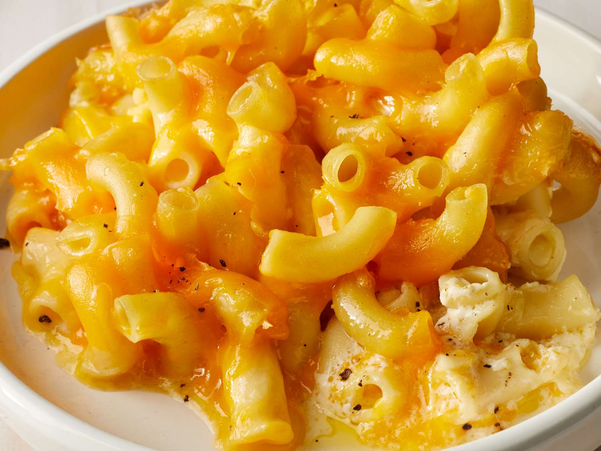

Simple Mac and Cheese Recipe

This super simple mac and cheese recipe makes for a quick and delicious lunch.
Ingredients
- 450g macaroni
- 8 tbsp butter
- 3 tbsp flour
- 3 cups whole milk
- 680g grated sharp cheddar cheese
- 1/4 tsp garlic powder
- 1tsp salt and pepper
Steps
- Add salt and oil to a pot of water and bring to a boil.
- Add macaroni and cooked for directed time until al dente.
- In a large saucepan, melt yout butter, add flour and whisk over medium high heat to form a paste.
- Stir until sauce thickens and add cheese in increments.
- Add garlic powder, salt, and pepper.
- Mix cheese sauce int pasta and mix until evenly coated.
- Serve and enjoy!
Home